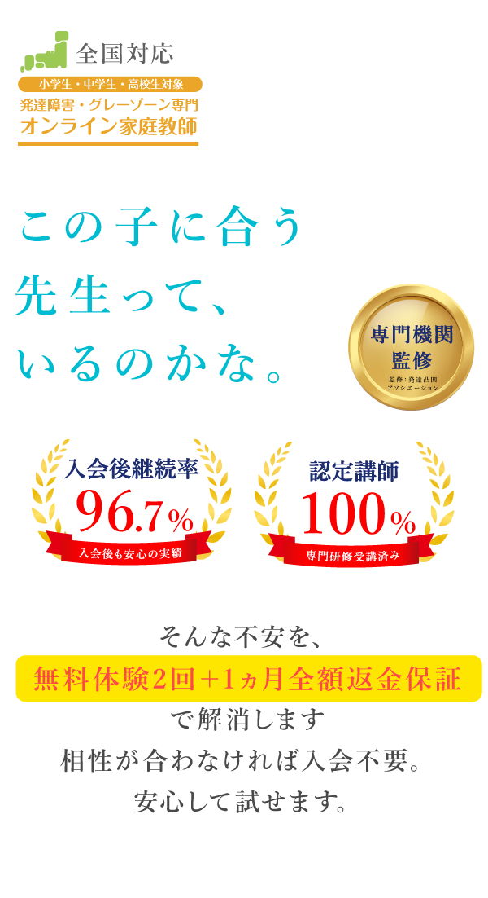
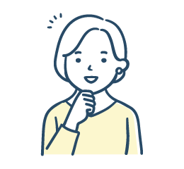
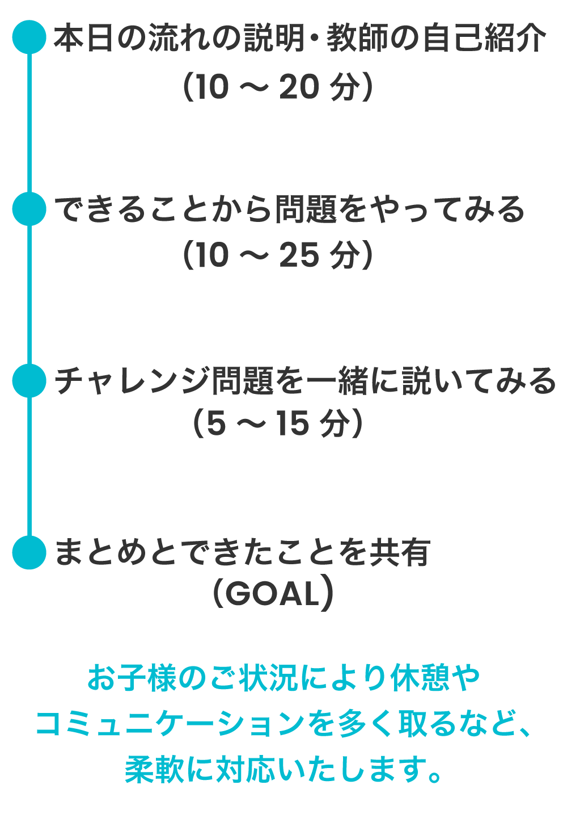
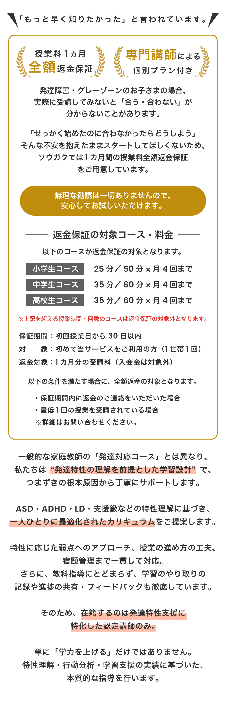

「また、勉強のことで怒ってしまった。」
教えているのに、なぜか進まない。
そんな毎日を、親子だけで抱え込まなくても。
- ファイル名
- images/gen/01_fv_evening-desk.webp
- 置き場所
- 01 FV（PR・更新日の帯の直下、本文「宿題が進まない。…」の前）
- 目的
- 「また勉強のことで怒ってしまった」を視覚化。
- alt
- 夕方の家の机に、開いたままのドリルと鉛筆・消しゴムが置かれ、椅子が少し引かれている
- 画像内の文字
- なし
- メモ
- 公式キービジュアルは見出しコピー（「この子に合う先生って、いるのかな。」）が本ページH1と重なり、FVに置くと公式サイトと誤認されやすいため、FVは生成画像とし、公式KVは02（FV直下）で使用。20 最終CTA（朝の机）と対になる同じ机で描く。
生成プロンプト（v6指示そのまま）
テーマ: 「夕方、途中で止まった宿題」 - 家庭の机 - 開いたドリル - 鉛筆・消しゴム - 少し引かれた椅子 - 人物なしでも可 - 不安を煽らず、疲れた家庭の空気 目的: 「また勉強のことで怒ってしまった」を視覚化。 【LP共通ルール（v6 E章・そのまま）】 - LP全体で同一テイスト - 3:2または16:9を基本 - スマホで見た時に細部が潰れない - 写真風にする場合も広告臭が強すぎない - イラストなら柔らかい編集イラスト - 濃紺＋薄青＋オレンジ/淡い金を基調 - パズルピースや脳のイラストで発達障害を表現しない - 子どもを悲惨に描かない - 親を怒鳴る悪役にしない - 画像内の長文は避ける - 数値・料金・保証条件は画像に焼き込まない - 体験談用の人物は「本人写真」に見せない - 同じ素材を別セクションで使い回さない 【この枠の情報】 ファイル名: images/gen/01_fv_evening-desk.webp 配置場所: 01 FV（PR・更新日の帯の直下、本文「宿題が進まない。…」の前） 目的: 「また勉強のことで怒ってしまった」を視覚化。 alt: 夕方の家の机に、開いたままのドリルと鉛筆・消しゴムが置かれ、椅子が少し引かれている 画像内の文字: なし
宿題が進まない。集中が続かない。
何度説明しても、同じところで止まってしまう。
それは「やる気」だけではなく、今の学び方がお子さんに合っていないこともあります。
発達障害・グレーゾーンなど、
一人ひとりの“つまずき方”に合わせて学ぶオンライン家庭教師「ソウガク」
診断がなくても、グレーゾーンでも相談できます。
- 無料体験は2回まで。
- 1回目を保護者と担当教師の面談にすることもできます。
- 体験後の無理な勧誘はしないと公式FAQに明記されています。
いきなり入会を決めなくて大丈夫です。

※数値・表現はソウガク公式LP（2026年10月5日確認）掲載に基づきます。
さらに、入会後も「やっぱり合わなかった」に備えて、授業料1カ月分の全額返金保証があります。
返金保証の主な条件
- 保証期間は初回授業日から30日以内
- 初めてソウガクを利用する家庭が対象（1世帯1回）
- 保証期間内に返金の連絡をすること
- 最低1回の授業を受講していること
- 対象は1カ月分の受講料。入会金は返金対象外
- 対象は小学生25分/50分、中学生・高校生35分/60分の各月4回までのコース。これを超える授業時間・回数は対象外。詳細は公式サイトで確認してください
家庭教師は気になるけど、本人が「やりたくない」と言いそうで…。
最初からお子さんを参加させなくても、1回目を保護者と担当教師の面談にできます。まず今の様子だけ相談してから、2回目を考えられます。
まだ診断もついていないんですが、それでも相談していいですか？
診断がなくても、グレーゾーンでも相談できます。今困っていることから話して大丈夫です。
※利用者の体験談ではなく、保護者からよく聞く迷いを編集部が会話形式に整理したものです。
毎日そばで見ているからこそ、
「何が合っていないんだろう」と分からなくなることがあります。
家庭教師を探しても、「マンツーマン」「個別対応」という言葉はどこも似ています。
だからこそ、名前や知名度より、“何を見て、どう支えてくれるか”で比べてみました。
発達特性のあるお子さんの家庭教師、
「1対1」だけで選んでいませんか？
見るなら、この3つです。
- ファイル名
- images/gen/03_compare_3points.webp
- 置き場所
- 03 比較導入（H2「…「1対1」だけで選んでいませんか？」→「見るなら、この3つです。」の直後、チェックリストの前）
- 目的
- 比較表を見る前に「何を比べるか」を一目で理解。
- alt
- 家庭教師選びで見る3つのポイント：特性を理解してもらえる？／どこで止まっているか見てくれる？／家庭の困りごとも相談できる？
- 画像内の文字
- 「家庭教師選び」「特性を理解してもらえる？」「どこで止まっているか見てくれる？」「家庭の困りごとも相談できる？」（文字品質が悪い場合はアイコンだけ生成し、文字はHTMLで重ねる）
- メモ
- 文字量は少なく。
生成プロンプト（v6指示そのまま）
画像内容: 中央に「家庭教師選び」 そこから3方向へ 1. 「特性を理解してもらえる？」 2. 「どこで止まっているか見てくれる？」 3. 「家庭の困りごとも相談できる？」 文字量は少なくする。 文字生成の品質が悪い場合は、画像はアイコンだけ生成し文字はHTMLで重ねる。 目的: 比較表を見る前に「何を比べるか」を一目で理解。 【LP共通ルール（v6 E章・そのまま）】 - LP全体で同一テイスト - 3:2または16:9を基本 - スマホで見た時に細部が潰れない - 写真風にする場合も広告臭が強すぎない - イラストなら柔らかい編集イラスト - 濃紺＋薄青＋オレンジ/淡い金を基調 - パズルピースや脳のイラストで発達障害を表現しない - 子どもを悲惨に描かない - 親を怒鳴る悪役にしない - 画像内の長文は避ける - 数値・料金・保証条件は画像に焼き込まない - 体験談用の人物は「本人写真」に見せない - 同じ素材を別セクションで使い回さない 【この枠の情報】 ファイル名: images/gen/03_compare_3points.webp 配置場所: 03 比較導入（H2「…「1対1」だけで選んでいませんか？」→「見るなら、この3つです。」の直後、チェックリストの前） 目的: 比較表を見る前に「何を比べるか」を一目で理解。 alt: 家庭教師選びで見る3つのポイント：特性を理解してもらえる？／どこで止まっているか見てくれる？／家庭の困りごとも相談できる？ 画像内の文字: 「家庭教師選び」「特性を理解してもらえる？」「どこで止まっているか見てくれる？」「家庭の困りごとも相談できる？」（文字品質が悪い場合はアイコンだけ生成し、文字はHTMLで重ねる）
- お子さんの特性を理解してもらえるか
- 「どこで止まっているか」から学び方を考えてもらえるか
- 家庭での困りごとも相談できるか
表は横にスクロール可能
| 比較ポイント | 家庭教師のランナー | 家庭教師のサクシード | ||
|---|---|---|---|---|
| 発達特性への位置づけ | 発達障害・グレーゾーン専門 | 発達障害サポートコースあり | 発達障害の指導経験がある教師を選定可能 | LD・ADHD・ASDサポートコースあり |
| 先生側の支援体制 | 発達支援専門機関による教師研修＋マニュアル研修 | 特性を共有し、指導方法をレクチャー | 教育プランナーが教師選定・学習をサポート | 発達支援経験が豊富な教師から選抜 |
| つまずき把握→学び方の設計 | 専門家開発のアセスメント→個別指導計画 | 体験内容をもとに指導カルテ | つまずきの原因までさかのぼり個別設計 | 特性をヒアリングし個別カリキュラム |
| 保護者への継続サポート | 毎回の指導報告＋教師/本部チャット＋保護者向け勉強会・相談窓口 | 保護者LINE＋本部から定期確認 | 教育プランナー＋定期面談 | 専任スタッフが相談対応 |
| 入会前に確認できること | 2回まで無料体験。体験後に個別指導計画 | 90分無料体験 | 無料学習相談 | 無料体験 |
| 試してから決めやすいか | 無料体験2回＋授業料1カ月全額返金保証（条件あり） | 90分無料体験 | 無料学習相談／体験 | 無料体験 |
表は横にスクロール可能
※2026年10月5日時点の各社公式サイトで確認できた内容を、当サイトが整理したものです。サービス内容・条件は変更される場合があります。ロゴは各社公式サイトに掲載のものです。
【結論】
比べてみると、どのサービスにも良さがあります。
そのうえで今回の3つの基準を重視すると、ソウガクは、
「発達特性を前提にした教師研修」
「アセスメントから個別指導計画」
「毎回の報告や保護者の相談先」
まで、ひとつの流れとして確認できます。
“発達障害に対応できるか”だけでなく、最初からその子の特性を前提に仕組みが作られているか。ここが、今回いちばん見てほしい違いです。
発達特性のある子の家庭教師選びで、見てほしい3つのこと
1.「何が苦手か」より、「どこで止まっているか」を見てくれるか
- ファイル名
- images/gen/05_stuck_4types.webp
- 置き場所
- 05 選び方1（H3「1.「何が苦手か」より、「どこで止まっているか」を見てくれるか」の直下）
- 目的
- 「同じ勉強が苦手でも原因が違う」を視覚化。
- alt
- 同じ「勉強が苦手」でも、読むところ・書くところ・始めるまで・集中の途中と、止まる場所は子どもによって違う
- 画像内の文字
- なし、または「読む」「書く」「始める」「集中」の短いラベルのみ
- メモ
- 人物を描く場合は特定の障害の見た目を作らない。表情を過剰に困らせない。
生成プロンプト（v6指示そのまま）
4つの小さな場面: - 読むところで止まる - 書くところで止まる - 始めるまで時間がかかる - 集中が途中で切れる 人物を描く場合は特定の障害の見た目を作らない。 表情を過剰に困らせない。 目的: 「同じ勉強が苦手でも原因が違う」を視覚化。 【LP共通ルール（v6 E章・そのまま）】 - LP全体で同一テイスト - 3:2または16:9を基本 - スマホで見た時に細部が潰れない - 写真風にする場合も広告臭が強すぎない - イラストなら柔らかい編集イラスト - 濃紺＋薄青＋オレンジ/淡い金を基調 - パズルピースや脳のイラストで発達障害を表現しない - 子どもを悲惨に描かない - 親を怒鳴る悪役にしない - 画像内の長文は避ける - 数値・料金・保証条件は画像に焼き込まない - 体験談用の人物は「本人写真」に見せない - 同じ素材を別セクションで使い回さない 【この枠の情報】 ファイル名: images/gen/05_stuck_4types.webp 配置場所: 05 選び方1（H3「1.「何が苦手か」より、「どこで止まっているか」を見てくれるか」の直下） 目的: 「同じ勉強が苦手でも原因が違う」を視覚化。 alt: 同じ「勉強が苦手」でも、読むところ・書くところ・始めるまで・集中の途中と、止まる場所は子どもによって違う 画像内の文字: なし、または「読む」「書く」「始める」「集中」の短いラベルのみ
読むところで止まるのか。書くことが大変なのか。始めるまでに時間がかかるのか。
同じ「勉強が苦手」でも、困っている場所は違います。
最初から決まったやり方に当てはめるより、まず“どこで止まっているか”を見てくれるかを確認したいところです。
2.「いい先生がいるか」だけでなく、先生を支える仕組みがあるか
- ファイル名
- images/gen/06_support_system.webp
- 置き場所
- 06 選び方2（H3「2.「いい先生がいるか」だけでなく、先生を支える仕組みがあるか」の直下）
- 目的
- 「いい先生1人」ではなく「先生を支える仕組み」が大事と理解させる。
- alt
- 担当教師を、専門研修・指導方針・本部/専門スタッフ・指導記録が周りから支えている関係図
- 画像内の文字
- 「担当教師」「専門研修」「指導方針」「本部/専門スタッフ」「指導記録」
- メモ
- 特定サービスのロゴ・名称は入れない（選び方の一般論のため）。
生成プロンプト（v6指示そのまま）
中央: 「担当教師」 周囲: - 専門研修 - 指導方針 - 本部/専門スタッフ - 指導記録 矢印でつなぐ。 目的: 「いい先生1人」ではなく「先生を支える仕組み」が大事と理解させる。 【LP共通ルール（v6 E章・そのまま）】 - LP全体で同一テイスト - 3:2または16:9を基本 - スマホで見た時に細部が潰れない - 写真風にする場合も広告臭が強すぎない - イラストなら柔らかい編集イラスト - 濃紺＋薄青＋オレンジ/淡い金を基調 - パズルピースや脳のイラストで発達障害を表現しない - 子どもを悲惨に描かない - 親を怒鳴る悪役にしない - 画像内の長文は避ける - 数値・料金・保証条件は画像に焼き込まない - 体験談用の人物は「本人写真」に見せない - 同じ素材を別セクションで使い回さない 【この枠の情報】 ファイル名: images/gen/06_support_system.webp 配置場所: 06 選び方2（H3「2.「いい先生がいるか」だけでなく、先生を支える仕組みがあるか」の直下） 目的: 「いい先生1人」ではなく「先生を支える仕組み」が大事と理解させる。 alt: 担当教師を、専門研修・指導方針・本部/専門スタッフ・指導記録が周りから支えている関係図 画像内の文字: 「担当教師」「専門研修」「指導方針」「本部/専門スタッフ」「指導記録」
相性のいい先生は大切です。
でも、発達特性への理解を先生個人の経験だけに任せるのは少し不安です。
研修があるか。指導方針が共有されるか。先生自身が困ったときに相談できる体制があるか。
そこまで見ておくと、担当による差も小さくしやすくなります。
3.授業が終わったあとも、親が相談できるか
- ファイル名
- images/gen/07_after_lesson_share.webp
- 置き場所
- 07 選び方3（H3「3. 授業が終わったあとも、親が相談できるか」の直下、本文「授業が始まっても、家での悩みは残ります。」の前）
- 目的
- 「親がまた一人で先生役に戻らない」を見せる。
- alt
- 授業のあと指導報告が保護者に届き、保護者からスマホで教師や本部へ相談できる流れ
- 画像内の文字
- 「授業」「指導報告」「保護者」「教師/本部へ相談」
- メモ
- 特定サービスのアプリ画面に見せない（ロゴ・サービス名・既読表示などは入れない）。
生成プロンプト（v6指示そのまま）
流れ: 授業 → 指導報告 → 保護者 → 教師/本部へ相談 スマホのチャット・報告書アイコンを使用。 目的: 「親がまた一人で先生役に戻らない」を見せる。 【LP共通ルール（v6 E章・そのまま）】 - LP全体で同一テイスト - 3:2または16:9を基本 - スマホで見た時に細部が潰れない - 写真風にする場合も広告臭が強すぎない - イラストなら柔らかい編集イラスト - 濃紺＋薄青＋オレンジ/淡い金を基調 - パズルピースや脳のイラストで発達障害を表現しない - 子どもを悲惨に描かない - 親を怒鳴る悪役にしない - 画像内の長文は避ける - 数値・料金・保証条件は画像に焼き込まない - 体験談用の人物は「本人写真」に見せない - 同じ素材を別セクションで使い回さない 【この枠の情報】 ファイル名: images/gen/07_after_lesson_share.webp 配置場所: 07 選び方3（H3「3. 授業が終わったあとも、親が相談できるか」の直下、本文「授業が始まっても、家での悩みは残ります。」の前） 目的: 「親がまた一人で先生役に戻らない」を見せる。 alt: 授業のあと指導報告が保護者に届き、保護者からスマホで教師や本部へ相談できる流れ 画像内の文字: 「授業」「指導報告」「保護者」「教師/本部へ相談」
授業が始まっても、家での悩みは残ります。
「今週は宿題を嫌がっている」
「家ではこんな様子だけど、授業ではどうなんだろう」
そんな変化を共有できるか。親がまた一人で先生役に戻らなくていい仕組みがあるかも、見ておきたいポイントです。
この3つで見ると、
「マンツーマンだから」ではなく、
“この子の困り方を見つけて、合う方法を考え、家庭と一緒に続けられるか”で選べます。
発達特性への学習サポートを重視する家庭教師
おすすめ3選
各社公式サイトで確認できる情報をもとに、①発達特性を前提にした支援設計、②つまずき把握と個別の学び方づくり、③保護者との継続的な連携を重視して編集部が独自評価しています。2026年10月5日時点。
🥇第1位：ソウガク｜発達特性の専門性だけでなく、「始めてから合わなかった」まで考えた設計


ソウガクのポイント｜専門性
- 発達障害・グレーゾーン専門
- 発達支援専門機関による教師研修
- 認定講師100%（公式LP掲載）
- 一般社団法人 発達凸凹アソシエーション監修
- 専門家開発のアセスメント
- 一人ひとりの個別指導計画
- 毎回の指導報告
- 教師・本部とのチャット
- 保護者向け勉強会・相談窓口
- 発達特性理解のための講師研修
- アセスメントシートの活用

保護者の方向けの勉強会- 相談窓口

ソウガクのポイント｜安心材料
- 無料体験2回
- 1回目を保護者面談にもできる
- 体験後に個別指導計画
- 入会後も同じ先生が担当する担任制
- 授業料1カ月全額返金保証（条件あり）
- 入会後継続率96.7%（公式LP掲載）
体験の2回だけで「合う・合わない」を決め切れなくても、入会後の最初の1カ月まで試せる。ここは、発達特性のある子の家庭にとってかなり大きな安心材料です。
こんな家庭に合いやすい
- 集団塾や一般的な家庭教師でうまくいかなかった
- 「どこでつまずいているのか」から見てほしい
- 家で親が教えるとぶつかりやすい
- 発達特性を理解した先生に任せたい
- 授業後も家庭の様子を相談したい
体験で先に確認したいこと
- 画面越しの授業に抵抗がないか
- 先生との相性
- 25分/50分など、集中しやすい授業時間
- 月額料金を家庭で無理なく続けられるか
体験談①｜「その子に合う学び方」を相談できたケース
岡山県／中学2年生／保護者
初めは緊張もあり、集中が続きにくい場面がありました。保護者は、それまで子どものタイプに合わせた学習方法を相談できる先生になかなか出会えなかったそうです。
ソウガクでは複数回の体験を通じ、先生と一緒に小さく「できる」を積み上げていきました。特性に合わせて学習スタイルを相談できる点に助けられた、と公式サイトで紹介されています。
「この子に合う学び方を、先生と一緒に考えられた」
体験からいきなり成果を求めるのではなく、まず合う学び方を探す。今回の選び方と同じ考え方で進んだケースです。
※ソウガク公式「生徒・保護者様の声」を当サイトで要約したものです。感じ方や成果には個人差があります。
- 入会金22,000円（税込）は別途かかります。
- 料金やキャンペーンは最新の公式情報を確認してください。
- オンラインが合うかどうかは、無料体験で確認しましょう。
🥈第2位：家庭教師のランナー｜勉強が苦手な子への柔軟な対応と、家庭まで含めたサポート
ランナーは「勉強が苦手な子」の支援を広く行う家庭教師サービスで、発達障害・グレーゾーン向けのサポートコースも用意されています。
発達特性向けでは、決まったカリキュラムに当てはめず、その子の特性や困りごとに合わせて教え方・覚え方・関わり方を変えていく方針です。
ランナーのポイント
- ADHD・ASD・LD・グレーゾーン向けの発達障害サポート
- 特性に合わせて指導方針を組み、固定カリキュラムにしない
- 「発達障害コミュニケーション指導者」のスタッフが担当教師を支援
- 体験時の情報をもとに指導カルテを作成
- 指導カルテをもとに本部が担当教師候補を選考
- 保護者は本部へ電話・メール・Web面談・LINE等で相談可能
- 本部から定期的な状況確認
- 先生が合わない場合は無料で何度でも交代可能
- 90分の無料体験あり
こんな家庭に合いやすい
- 勉強そのものへの苦手意識が強い
- まず勉強のやり方から教えてほしい
- 先生候補の多さや相性を重視したい
- 本部へ気軽に相談できる体制がほしい
- 対面もオンラインも候補に入れたい
選ぶ前に確認したいこと
- 発達特性への支援は、サービス全体ではなくサポートコースとして提供
- 体験担当者と入会後の担当教師の関係
- 料金体系・教材など家庭ごとの総額
ソウガクとの違い
ランナーは「勉強が苦手な子」全体を広く支援し、その中に発達障害サポートコースがあります。一方、ソウガクはサービス全体を発達障害・グレーゾーン専門として設計しています。「広い家庭教師サービスの中で発達支援コースを選ぶか」「最初から発達特性専門のサービスを選ぶか」が大きな違いです。
🥉第3位：家庭教師のサクシード｜LD・ADHD・ASD専用コースと、経験ある教師の選抜が強み
サクシードにはLD・ADHD・ASDサポートコースがあり、専任スタッフがお子さんの特性を聞いたうえで、発達支援の指導経験がある教師から担当を選びます。
同じ診断名でも学びやすい方法は違うという前提で、図や短い言葉、手順の見える化など、その子に合わせたカリキュラムを組む方針です。
サクシードのポイント
- LD・ADHD・ASDサポートコース
- 専任スタッフが特性をヒアリング
- 発達支援の指導経験が豊富な教師から選抜
- 特性に合わせたオーダーメイドカリキュラム
- 保護者の意見を取り入れながら指導を調整
- 心配事は専門スタッフへ相談可能
- 教師が合わない場合は何度でも無料交代
- 無料体験あり
- 発達支援コースの指導料は1時間5,830円（税込）〜と公式掲載
こんな家庭に合いやすい
- LD・ADHD・ASDなど特性がある程度はっきりしている
- 発達支援経験のある教師を選びたい
- 子どもに合わせて説明方法を細かく変えてほしい
- 対面の家庭教師を軸に検討したい
- 料金の目安も見ながら比較したい
選ぶ前に確認したいこと
- 無料体験でどこまで発達特性に合わせた指導を確認できるか
- 実際に担当する教師と体験時の担当者が同じか
- オンライン希望の場合の詳細条件
- 料金総額と利用条件
ソウガクとの違い
サクシードも発達特性向けの専用コースを持ち、教師選抜や個別カリキュラムは強みです。一方、今回確認した公式情報では、ソウガクは「専門機関による教師研修」「アセスメントから個別指導計画」「毎回の報告・保護者向け勉強会・相談窓口」まで一続きで明示しています。今回の評価軸では、この「サービス全体の仕組みのつながり」を重く見てソウガクを1位としました。
大手の安心感や選択肢を重視するなら、家庭教師のトライも候補
発達障害の指導経験を持つ教師を選べることや、教育プランナーによるサポートがあります。今回は「発達特性を前提にした支援設計」を最重視したため、ランキング上位3社とは評価軸が異なります。
実際の保護者は、どんなところで「助かった」と感じている？
ここからは、ソウガク公式サイトに掲載されている保護者・生徒の声を、今回の悩みに沿って紹介します。
成果を保証するものではありませんが、「どんなところに変化を感じたのか」を見る材料にはなります。
体験談A｜家で教えると、ケンカになってしまう
- ファイル名
- images/gen/12_story-a_parent-burden.webp
- 置き場所
- 12 体験談A（H3「体験談A｜家で教えると、ケンカになってしまう」の直下、mt-say の前）
- 目的
- 家庭で勉強を抱えている親の負担を、静かな情景で伝える。
- alt
- 開いた教材を前に2つの椅子が置かれ、片方の椅子の前にマグカップがある家庭の机（イメージ）
- 画像内の文字
- なし
- メモ
- 生成人物を公式体験談の本人として見せない。差し替え時は mt-img__note に「※画像はイメージです」を必ず付ける。
生成プロンプト（v6指示そのまま）
### 生成画像：親の負担を表す情景 人物を使う場合: - 親子が怒鳴り合う絵にはしない - 机をはさんで少し距離がある - 教材を前にした静かな疲れ 人物なしの場合: - 開いた教材 - 2つの椅子 - 片方に置かれたマグカップ - 消しゴム などで「家庭で抱えている」を表現。 ### 重要 生成人物を公式体験談の本人として見せない。 画像には「イメージ」と分かる扱いをする。 その下に mt-say → mt-story → mt-review 【LP共通ルール（v6 E章・そのまま）】 - LP全体で同一テイスト - 3:2または16:9を基本 - スマホで見た時に細部が潰れない - 写真風にする場合も広告臭が強すぎない - イラストなら柔らかい編集イラスト - 濃紺＋薄青＋オレンジ/淡い金を基調 - パズルピースや脳のイラストで発達障害を表現しない - 子どもを悲惨に描かない - 親を怒鳴る悪役にしない - 画像内の長文は避ける - 数値・料金・保証条件は画像に焼き込まない - 体験談用の人物は「本人写真」に見せない - 同じ素材を別セクションで使い回さない 【この枠の情報】 ファイル名: images/gen/12_story-a_parent-burden.webp 配置場所: 12 体験談A（H3「体験談A｜家で教えると、ケンカになってしまう」の直下、mt-say の前） 目的: 家庭で勉強を抱えている親の負担を、静かな情景で伝える。 alt: 開いた教材を前に2つの椅子が置かれ、片方の椅子の前にマグカップがある家庭の机（イメージ） 画像内の文字: なし
家で私が教えると、つい言いすぎてしまう。
勉強を見るのが、だんだん苦しくなってきた。
※同じ悩みを表したイメージです（体験談の引用ではありません）。
小学4年生／ADHDの診断あり／普通級／保護者
学校へ行ける日が減り、勉強の遅れが気になっていました。家で保護者が勉強を見ると、イライラして親子で言い合いになることもあったそうです。
オンラインで週1回学ぶ習慣ができたことで、保護者が「ずっと自分が見なければ」と抱えていた負担が軽くなった、と公式サイトで紹介されています。
「親が全部見なくていい」と思えたことが助けになった
この事例で大きいのは、勉強の習慣だけでなく、保護者自身の負担にも変化があったこと。家庭の外に、一緒にお子さんを見てくれる先生がいることの意味が分かる例です。
親がもっと上手に教えられるようになることだけが答えではありません。
家庭の外に、お子さんの困り方を一緒に見てくれる人を増やす。それも一つの方法です。
体験談B｜オンラインで、座っていられるか不安
- ファイル名
- images/gen/13_story-b_online-desk.webp
- 置き場所
- 13 体験談B（H3「体験談B｜オンラインで、座っていられるか不安」の直下、mt-say の前）
- 目的
- オンライン授業を具体的にイメージ。
- alt
- 家庭の机に置かれたノートパソコンにオンライン授業の画面が映り、手前にノートと鉛筆がある（イメージ）
- 画像内の文字
- なし
- メモ
- 画面内の先生は実在教師に見せない。可能なら人物なし/シンプルな画面。差し替え時は「※画像はイメージです」。
生成プロンプト（v6指示そのまま）
### 生成画像 家庭の机＋ノートPC＋オンライン授業画面。 - 画面内に先生の顔を生成してもよいが、実在教師には見せない - 可能なら人物なし/シンプルな画面 - ノートと鉛筆 - 集中しやすい静かな環境 目的: オンライン授業を具体的にイメージ。 【LP共通ルール（v6 E章・そのまま）】 - LP全体で同一テイスト - 3:2または16:9を基本 - スマホで見た時に細部が潰れない - 写真風にする場合も広告臭が強すぎない - イラストなら柔らかい編集イラスト - 濃紺＋薄青＋オレンジ/淡い金を基調 - パズルピースや脳のイラストで発達障害を表現しない - 子どもを悲惨に描かない - 親を怒鳴る悪役にしない - 画像内の長文は避ける - 数値・料金・保証条件は画像に焼き込まない - 体験談用の人物は「本人写真」に見せない - 同じ素材を別セクションで使い回さない 【この枠の情報】 ファイル名: images/gen/13_story-b_online-desk.webp 配置場所: 13 体験談B（H3「体験談B｜オンラインで、座っていられるか不安」の直下、mt-say の前） 目的: オンライン授業を具体的にイメージ。 alt: 家庭の机に置かれたノートパソコンにオンライン授業の画面が映り、手前にノートと鉛筆がある（イメージ） 画像内の文字: なし
そもそも、画面の前に座って授業を受けられるのかな…。
※同じ悩みを表したイメージです（体験談の引用ではありません）。
中学2年生／特別支援学級／保護者
勉強への苦手意識があり、初回の体験では落ち着いて画面の前に座ることも難しかったそうです。先生は急いで授業を進めず、時間をかけて関係をつくりました。
その後は授業の時間を楽しみにするようになり、保護者は勉強への苦手意識にも変化を感じている、と公式サイトで紹介されています。
最初から「ちゃんと受けられる子」でなくても、関係づくりから始めたケース
「オンラインだから集中できる」とは限りません。だからこそ、最初から完璧を求めず、関係づくりから始められるかを体験で見ておくことが大切です。
無理に「大丈夫です」とは言いません。
子どもによって、先生との相性も、画面越しの授業が合うかどうかも違うからです。
だから、入会してから悩むのではなく、先に体験で見ておく。
体験談C｜集中が切れそうなときの、先生の関わり
- ファイル名
- images/gen/14_story-c_refocus.webp
- 置き場所
- 14 体験談C（H3「体験談C｜集中が切れそうなときの、先生の関わり」の直下、mt-story の前）
- 目的
- 「発達特性を理解した関わり」を視覚化。
- alt
- 集中が切れたときに、先生の短い声かけでもう一度課題へ戻る流れ
- 画像内の文字
- 「集中が切れる」「短い声かけ」「もう一度課題へ」（文字はHTMLで重ねてもよい）
- メモ
- 画像内の文章は最小限。
生成プロンプト（v6指示そのまま）
### 生成画像：先生の「戻す声かけ」の概念図 例: 「集中が切れる」 ↓ 「短い声かけ」 ↓ 「もう一度課題へ」 画像内の文章は最小限。 文字はHTMLで重ねてもよい。 目的: 「発達特性を理解した関わり」を視覚化。 【LP共通ルール（v6 E章・そのまま）】 - LP全体で同一テイスト - 3:2または16:9を基本 - スマホで見た時に細部が潰れない - 写真風にする場合も広告臭が強すぎない - イラストなら柔らかい編集イラスト - 濃紺＋薄青＋オレンジ/淡い金を基調 - パズルピースや脳のイラストで発達障害を表現しない - 子どもを悲惨に描かない - 親を怒鳴る悪役にしない - 画像内の長文は避ける - 数値・料金・保証条件は画像に焼き込まない - 体験談用の人物は「本人写真」に見せない - 同じ素材を別セクションで使い回さない 【この枠の情報】 ファイル名: images/gen/14_story-c_refocus.webp 配置場所: 14 体験談C（H3「体験談C｜集中が切れそうなときの、先生の関わり」の直下、mt-story の前） 目的: 「発達特性を理解した関わり」を視覚化。 alt: 集中が切れたときに、先生の短い声かけでもう一度課題へ戻る流れ 画像内の文字: 「集中が切れる」「短い声かけ」「もう一度課題へ」（文字はHTMLで重ねてもよい）
小学5年生／生徒・保護者
授業中に集中が切れそうになる場面でも、先生の声かけで再び勉強に向かう様子があったそうです。本人も先生との授業を楽しみにしている、と保護者の声が掲載されています。
集中が切れたときに、もう一度戻れる声かけをしてくれた
集中が切れることを前提に、もう一度課題へ戻れる関わりがあるか。発達特性を理解した関わりかどうかは、こうした場面に表れます。
3つの体験談から見えたこと
- ファイル名
- images/gen/15_story_4changes.webp
- 置き場所
- 15 体験談まとめ（H3「3つの体験談から見えたこと」の直下、mt-voice の前）
- 目的
- 3件の体験談を一枚で整理。
- alt
- 公式の体験談から見えた4つの変化：関係づくり、特性に合った声かけ、授業を楽しみにする、親の負担が軽くなる
- 画像内の文字
- 「関係づくり」「特性に合った声かけ」「授業を楽しみにする」「親の負担が軽くなる」
- メモ
- mt-voice とセット。
生成プロンプト（v6指示そのまま）
### 生成画像：4つの変化まとめ 4アイコン: - 関係づくり - 特性に合った声かけ - 授業を楽しみにする - 親の負担が軽くなる mt-voice とセット。 目的: 3件の体験談を一枚で整理。 【LP共通ルール（v6 E章・そのまま）】 - LP全体で同一テイスト - 3:2または16:9を基本 - スマホで見た時に細部が潰れない - 写真風にする場合も広告臭が強すぎない - イラストなら柔らかい編集イラスト - 濃紺＋薄青＋オレンジ/淡い金を基調 - パズルピースや脳のイラストで発達障害を表現しない - 子どもを悲惨に描かない - 親を怒鳴る悪役にしない - 画像内の長文は避ける - 数値・料金・保証条件は画像に焼き込まない - 体験談用の人物は「本人写真」に見せない - 同じ素材を別セクションで使い回さない 【この枠の情報】 ファイル名: images/gen/15_story_4changes.webp 配置場所: 15 体験談まとめ（H3「3つの体験談から見えたこと」の直下、mt-voice の前） 目的: 3件の体験談を一枚で整理。 alt: 公式の体験談から見えた4つの変化：関係づくり、特性に合った声かけ、授業を楽しみにする、親の負担が軽くなる 画像内の文字: 「関係づくり」「特性に合った声かけ」「授業を楽しみにする」「親の負担が軽くなる」
✓公式の保護者・生徒の声から見えたこと
- 最初から50分集中できなくても、関係づくりから始めている例がある
- 特性に合わせた声かけや学び方を保護者が評価している
- 授業そのものを楽しみにするようになった例がある
- 子どもだけでなく、親の「自分が全部見なければ」という負担が軽くなった例もある
※ソウガク公式「生徒・保護者様の声」を当サイトで要約したものです。感じ方や成果には個人差があります。
ほかの保護者の声も見る ▼
中学3年生／保護者
学校の授業についていけず意欲を失っていましたが、体験時にタブレット画面へ向き合う姿が見られたそうです。保護者は、先生の声かけと、毎回の指導報告を確認できることも評価しています。
小学2年生／保護者
数の理解や計算に難しさがあるお子さんに対し、先生が毎回やり方を変えながら分かりやすく伝えてくれている、という保護者の声です。
※ソウガク公式「生徒・保護者様の声」を当サイトで要約したものです。感じ方や成果には個人差があります。
体験で合うか見て、それでも不安なら最初の1カ月まで。
ここで紹介したのは、あくまで他のご家庭の例です。
お子さんにも同じ変化が起きるとは限りません。
だからこそ、まず2回の無料体験で相性を見て、入会後も条件を満たせば最初の1カ月の授業料を返金できる仕組みがあります。
- ファイル名
- images/gen/16_trial_2steps.webp
- 置き場所
- 16 無料体験（H2「体験で合うか見て、それでも不安なら最初の1カ月まで。」の導入文の後、本文「ソウガクの無料体験は2回まで。」の前）
- 目的
- 「2回の無料体験」の流れを視覚化。
- alt
- 無料体験の流れ：1回目は保護者面談も可、2回目はお子さんの授業、その後に個別指導計画、合いそうなら入会検討
- 画像内の文字
- 「1回目」「保護者面談も可」「2回目」「お子さんの授業」「個別指導計画」「入会検討」
- メモ
- 直後の公式画像（体験授業の内容・様子、返金保証）と役割を分ける：こちらは申込〜入会検討の全体の流れ。
生成プロンプト（v6指示そのまま）
### 生成図解 「2回の無料体験」の流れを視覚化。 1回目: 保護者面談も可 2回目: お子さんの授業 その後: 個別指導計画 合いそうなら: 入会検討 【LP共通ルール（v6 E章・そのまま）】 - LP全体で同一テイスト - 3:2または16:9を基本 - スマホで見た時に細部が潰れない - 写真風にする場合も広告臭が強すぎない - イラストなら柔らかい編集イラスト - 濃紺＋薄青＋オレンジ/淡い金を基調 - パズルピースや脳のイラストで発達障害を表現しない - 子どもを悲惨に描かない - 親を怒鳴る悪役にしない - 画像内の長文は避ける - 数値・料金・保証条件は画像に焼き込まない - 体験談用の人物は「本人写真」に見せない - 同じ素材を別セクションで使い回さない 【この枠の情報】 ファイル名: images/gen/16_trial_2steps.webp 配置場所: 16 無料体験（H2「体験で合うか見て、それでも不安なら最初の1カ月まで。」の導入文の後、本文「ソウガクの無料体験は2回まで。」の前） 目的: 「2回の無料体験」の流れを視覚化。 alt: 無料体験の流れ：1回目は保護者面談も可、2回目はお子さんの授業、その後に個別指導計画、合いそうなら入会検討 画像内の文字: 「1回目」「保護者面談も可」「2回目」「お子さんの授業」「個別指導計画」「入会検討」
ソウガクの無料体験は2回まで。
1回目を保護者と先生の面談にして、そこで話した内容をもとに、2回目でお子さんの授業を受けることもできます。
体験を担当するのは、入会後に実際に担当する予定の先生です。
ページだけでは分からない相性まで見てから決められます。
段階1｜入会前
- 1無料体験を申し込む
- 2教務担当が今の様子や困りごとをヒアリング
- 3無料体験1回目（保護者面談にもできる）
- 4無料体験2回目
- 5お子さん用の個別指導計画を受け取る
- 6合いそうなら入会を検討



段階2｜入会後
「体験では良さそうだった。でも続けてみたら合わなかったら？」
そこまで心配する家庭のために、ソウガクは授業料1カ月分の全額返金保証を用意しています。
発達特性のあるお子さんは、1〜2回の体験だけでは相性を判断しきれないこともあります。だから「無料体験で確認して終わり」ではなく、入会後の最初の1カ月まで安心材料を用意している点は、他社比較でも見ておきたいポイントです。
- 入会前無料体験2回
- 入会後最初の1カ月
- 合わない場合条件付きで授業料全額返金対象は1カ月分の受講料（入会金は対象外）
返金保証の条件
- 保証期間：初回授業日から30日以内
- 対象：初めてソウガクを利用する家庭（1世帯1回）
- 保証期間内に返金の連絡をすること
- 最低1回の授業を受講していること
- 返金対象：1カ月分の受講料（入会金は返金対象外）
- 対象コース：小学生25分/50分、中学生・高校生35分/60分の各月4回まで（これを超える授業時間・回数は対象外）
- 詳細は申込前に公式サイトで最新条件を確認してください
「家庭教師を始める」と、今ここで決めなくて大丈夫です。
まずは、今どこで困っているのか。
どんな先生なら話せそうか。
どんな進め方なら続けられそうか。
一度、親子の外にいる人と整理してみる。
そのくらいの気持ちで、体験を使っていいと思います。
＼入会後も条件を満たせば授業料1カ月分全額返金保証／
無料体験2回から、まず相性を確かめてみる- 無料体験は2回まで
- 1回目を保護者面談にもできる
- 入会後の担当予定教師が体験を担当
- 体験後に個別指導計画
料金のことも、あとから不安にならないように。
子どもに合いそうでも、続けられる金額かどうかは大事です。
「あとから教材費が増えないかな」
「結局、月にいくらかかるんだろう」
申し込む前に、ここも見ておきましょう。
- 小学生：25分×月4回 13,200円／50分×月4回 22,000円
- 中学生：35分×月4回 18,480円／60分×月4回 26,400円
- 高校生：35分×月4回 21,560円／60分×月4回 29,920円
※すべて税込
- 保証金0円
- 月会費0円
- 更新費0円
- 教師交代費0円
- 受験生割増なし
- 学年内の料金UPなし
- 高額教材販売なし
- 科目数による料金UPなし
入会金22,000円（税込）は別途かかります。キャンペーンや各種割引は時期・条件で変わる場合があるため、最新条件は公式サイトで確認してください。
「続けられる金額か」だけでなく、「合わなかったときのリスク」も確認。
入会金22,000円（税込）は別途。授業料については、条件を満たせば初回授業日から30日以内の1カ月分全額返金保証があります。入会金は返金対象外です。
安いかどうかだけではなく、無理なく続けられるか。
料金も含めて「うちには合いそうか」を、体験のあとで考えて大丈夫です。
申し込む前に、気になること
- ファイル名
- images/gen/19_faq_check.webp
- 置き場所
- 19 FAQ（H2「申し込む前に、気になること」の直下、よくある質問の前）。小さめ（最大幅360px）で表示
- 目的
- 長文の区切りとして「申込前の確認」を表す。
- alt
- メモ帳とチェック、はてなの吹き出しのイラスト
- 画像内の文字
- なし（「？」「✓」の記号のみ）
- メモ
- 必須ではない枠。大きな扉画像にはしない。
生成プロンプト（v6指示そのまま）
### 生成画像 必須ではないが、長文の区切りとして小さな説明イラストを置いてよい。 テーマ: 「申込前の確認」 - メモ帳 - チェック - 吹き出し - はてな 大きな扉画像にはしない。 【LP共通ルール（v6 E章・そのまま）】 - LP全体で同一テイスト - 3:2または16:9を基本 - スマホで見た時に細部が潰れない - 写真風にする場合も広告臭が強すぎない - イラストなら柔らかい編集イラスト - 濃紺＋薄青＋オレンジ/淡い金を基調 - パズルピースや脳のイラストで発達障害を表現しない - 子どもを悲惨に描かない - 親を怒鳴る悪役にしない - 画像内の長文は避ける - 数値・料金・保証条件は画像に焼き込まない - 体験談用の人物は「本人写真」に見せない - 同じ素材を別セクションで使い回さない 【この枠の情報】 ファイル名: images/gen/19_faq_check.webp 配置場所: 19 FAQ（H2「申し込む前に、気になること」の直下、よくある質問の前）。小さめ（最大幅360px）で表示 目的: 長文の区切りとして「申込前の確認」を表す。 alt: メモ帳とチェック、はてなの吹き出しのイラスト 画像内の文字: なし（「？」「✓」の記号のみ）
診断がついていなくても受けられますか？
はい。診断がなくても、グレーゾーンでも受講できます。診断名の申告や手帳・受給者証の提出も不要です。
子どもがまだ家庭教師に乗り気ではありません。まず親だけで相談できますか？
無料体験は2回まで受けられ、1回目を保護者と担当教師の面談にすることができます。まず今の困りごとやお子さんの様子を伝えてから、2回目のレッスンを考えられます。
集中力が続かなくても大丈夫？
集中が続きにくいお子さん向けに25分コースがあります。会話やゲーム要素も取り入れながら進める工夫があります。
先生が合わなかったら？
教師の交代は何度でも無料です。担当教師の性別希望も伝えられます。
授業中、親はずっとそばにいる必要がありますか？
初回はできる限り同席をお願いしていますが、その後は保護者が家にいなくても受講できます。指導内容は専用アプリで確認できます。
体験後にしつこく勧誘されませんか？
公式FAQでは、体験後の無理な勧誘は一切しないと案内されています。
教材費などは別にかかりますか？
提携ICT教材や無料プリントを使うため、原則として教材購入は不要です。学習最適化ツールも月謝以外の追加費用はかからないと案内されています。
1カ月全額返金保証は、本当に全額戻りますか？
対象は1カ月分の受講料です。入会金は対象外です。初回授業日から30日以内、最低1回の授業受講、保証期間内の連絡など条件があります。対象コース・回数にも条件があるため、申込前に公式サイトで最新条件を確認してください。
無料体験では良かったけど、入会後に合わないと分かったら？
条件を満たせば、最初の1カ月分の授業料に全額返金保証があります。「体験だけでは判断しきれない」という不安まで考えた制度です。
ここまで読んでも、まだ迷っていて大丈夫です。
- ファイル名
- images/gen/20_final_morning-desk.webp
- 置き場所
- 20 最終CTA（H2「ここまで読んでも、まだ迷っていて大丈夫です。」の直下、本文「お子さんのことだから、…」の前）
- 目的
- 「全部解決した」ではなく、「一度相談してみようかな」まで感情を動かす。
- alt
- 朝の光が入る机に、閉じたノートと整えた鉛筆が置かれている
- 画像内の文字
- なし
- メモ
- IMG-01（夕方の机）と同じ机・同じ画風で、時間帯だけ朝に変える。IMG-01を参照画像として渡す。
生成プロンプト（v6指示そのまま）
### 生成画像 FVと対になる「朝の机」。 - 同じ机 - 朝の光 - 閉じたノート - 整えた鉛筆 - 少し前を向ける空気 - 人物なしでもよい 目的: 「全部解決した」ではなく、 「一度相談してみようかな」まで感情を動かす。 【LP共通ルール（v6 E章・そのまま）】 - LP全体で同一テイスト - 3:2または16:9を基本 - スマホで見た時に細部が潰れない - 写真風にする場合も広告臭が強すぎない - イラストなら柔らかい編集イラスト - 濃紺＋薄青＋オレンジ/淡い金を基調 - パズルピースや脳のイラストで発達障害を表現しない - 子どもを悲惨に描かない - 親を怒鳴る悪役にしない - 画像内の長文は避ける - 数値・料金・保証条件は画像に焼き込まない - 体験談用の人物は「本人写真」に見せない - 同じ素材を別セクションで使い回さない 【この枠の情報】 ファイル名: images/gen/20_final_morning-desk.webp 配置場所: 20 最終CTA（H2「ここまで読んでも、まだ迷っていて大丈夫です。」の直下、本文「お子さんのことだから、…」の前） 目的: 「全部解決した」ではなく、「一度相談してみようかな」まで感情を動かす。 alt: 朝の光が入る机に、閉じたノートと整えた鉛筆が置かれている 画像内の文字: なし
お子さんのことだから、簡単には決められないと思います。
「本当に合うのかな」
「また続かなかったらどうしよう」
「先生との相性は大丈夫かな」
その不安を、ページだけで全部消すことはできません。
だから、まず実際の先生と話して、お子さんの様子を見てもらう。
「ちょっと違うな」と思えば、入会しなくていい。
「この先生なら話せそう」「このやり方なら続けられるかも」と思えたら、そのときに考えればいいと思います。
勉強のことを、これからも親子だけで何とかし続けなくてもいい。
お子さんに合う学び方を探す最初の一歩として、無料体験を使ってみてください。
＼2回無料で相性を確認。入会後も1カ月授業料全額返金保証※／
ソウガクの無料体験を申し込む- 無料体験2回
- 1回目は保護者面談も可
- 同じ先生が入会後も担当
- 個別指導計画
- 授業料1カ月分返金保証※
※保証には条件があります。入会金は返金対象外です。
※本ページにはプロモーションが含まれます。料金・キャンペーン・サービス内容は変更される場合があります。申込前に公式サイトの最新情報をご確認ください。
※体験談はソウガク公式サイトに掲載された利用者の声を編集部で要約したもので、感じ方や成果には個人差があります。
※ソウガクの画像は、ソウガク公式サイト・公式LPに掲載されている素材です。各社のロゴは各社公式サイトに掲載のものです。
このページの運営者
- サイト名
- わが子の学び方ガイド
- 運営者
- わが子の学び方ガイド編集部（運営：ハコぶファミリー）
- お問い合わせ
- ハコぶファミリー お問い合わせ
当ページは、紹介しているサービスの運営会社が作成したものではありません。サービスの申込・利用に関するお問い合わせは、各サービスの公式サイトへお願いします。